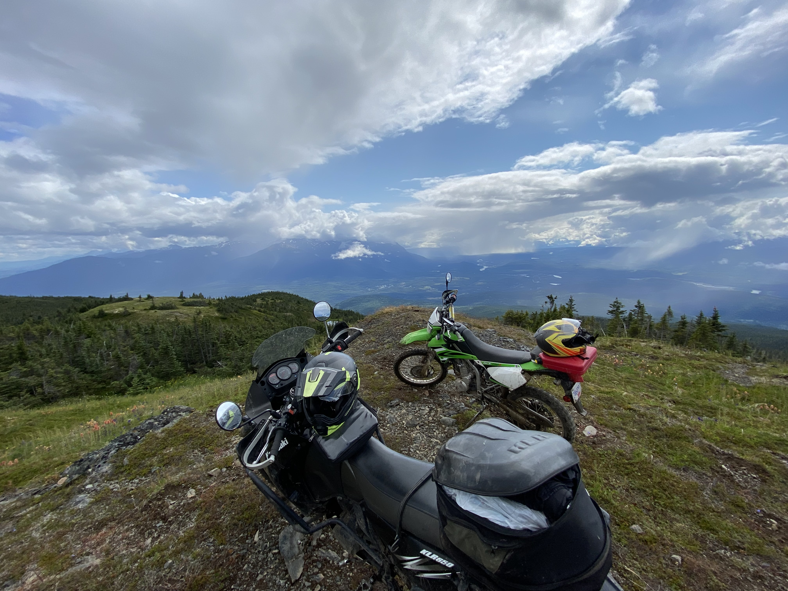
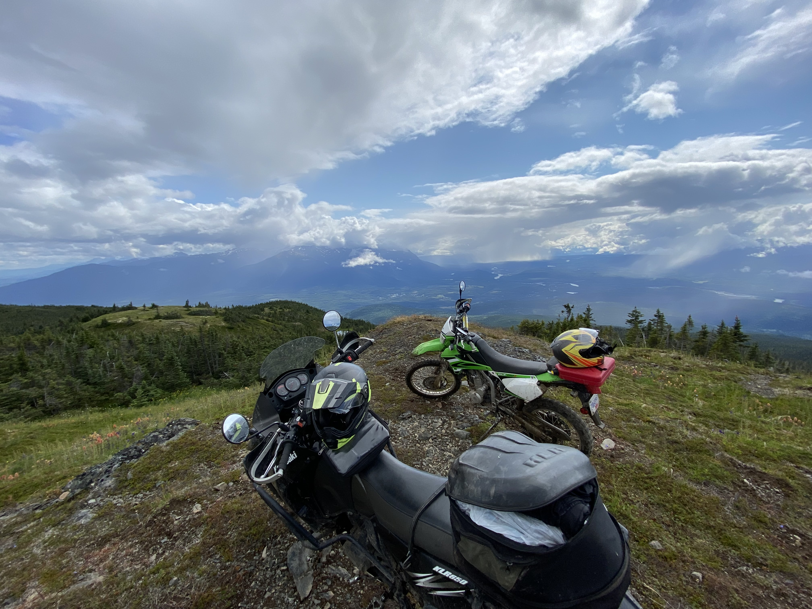

About me and some of the things I am interested in.
Motorcycles
I got into motorcycles by racing motocross with my dad and my brother. Later I got my road license and toured through BC and Alberta on my FZ6. Eventually I got bored of the pavement and went back to the dirt. Now I enjoy exploring all the wilderness and backcountry around Smithers.
 

Astronomy
TRU offers two astronomy courses, "The Solar System" and "Stars and Galaxies". I took both of these courses and loved every minute of it. Back at my home in Smithers, I had the available space to launch model rockets. One of my favorite games is Kerbal Space Program, in KSP you have to design and operate rockets to reach other planets to complete contracts.
Aviation

Since my job working at the airport, I have got into aviation. Through YouTube and VATSTAR, I have been able to gain enough knowledge to properly fly on Vatsim. I fly using Microsoft Flight Simulator 2020 and use VATSIM's services to get a close as possible to real life flying experience. Eventually, I plan on getting my private pilots license when finances and time allow it.
Want to know more?
I would be happy to get in touch. Contact me here.